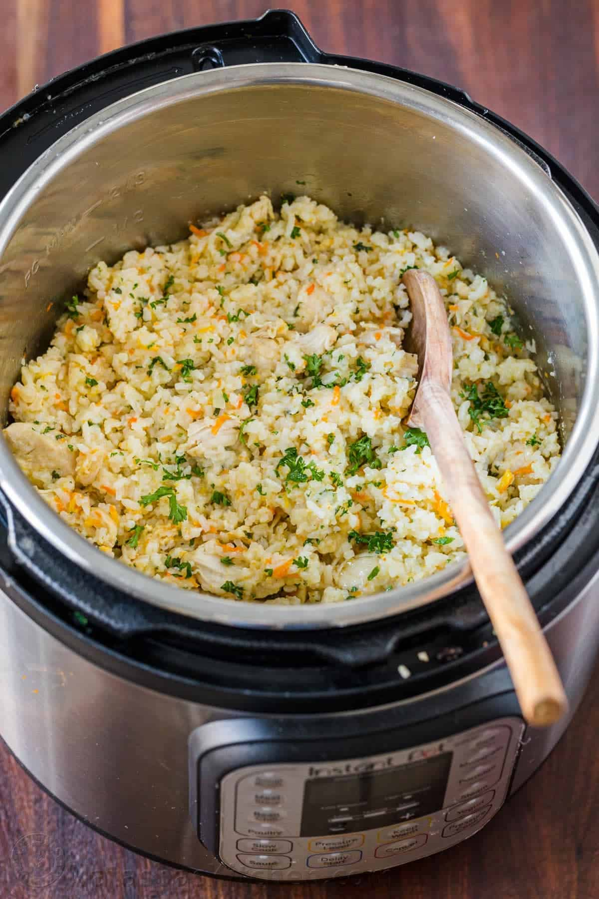

Instant Pot Butter Chicken

Description
Using your Instant Pot is an easy way to make a chicken and rice casserole. Once you get the ingredients prepped and into the pot, it’s mostly hands-off from there. While the Instant Pot cooks, you’ll be free to do whatever else you need to do… make a salad, fold a load of laundry,
or just sit on the couch with your feet up!
Ingredients
- Olive Oil: The olive oil is used for sautéing the vegetables.
-
Onion & Garlic: These provide a base layer of flavor to the dish.
Carrots: Carrots are the perfect vegetable to cook in the Instant Pot because they will soften without breaking down.
-
Brown Rice: Be sure to use long grain brown rice in this recipe. White rice cooks much faster in the Instant Pot and could burn with the cook time used in this recipe.
-
Dijon Mustard: Dijon enhances the flavor, but it does not make the finished dish taste like mustard.
-
Seasonings: Italian seasoning, garlic powder, salt and pepper are used to season the chicken and rice.
-
Chicken Broth: The broth is the liquid that allows the Instant Pot to reach pressure, and it also absorbs into the rice as it cooks. I recommend using low sodium chicken broth so that you can control the amount of salt in the finished dish.
-
Chicken Breasts: Boneless, skinless chicken breasts provide lean protein. Boneless, skinless chicken thighs can be substituted, with no change in the recipe cook time.
-
Frozen Peas: To add more veggies and a pop of color.
-
Parmesan Cheese: This dish is extra delicious served with grated Parmesan cheese.
Directions
- Sauté the onion and carrots in the Instant Pot using the sauté function. Then turn the Instant Pot off.
- Stir in the garlic.
- Add the brown rice, Dijon, seasonings and chicken broth. Stir well and scrape up any bits of food that are stuck to the bottom of the pot.
- Put the chicken breasts on top of the rice mixture
- Close the lid and set the valve to the sealing position.
- Pressure cook on high pressure for 20 minutes.
- Let the pot naturally release for 10 minutes.
- Quick release any remaining pressure by carefully moving the valve to the venting position.
- Remove the chicken to a clean cutting board.
- Stir the peas into the Instant Pot. Put the lid back on the pot and let it rest for 5 minutes to heat the peas through.
- Chop the chicken into bite-size pieces and stir it back into the Instant Pot.